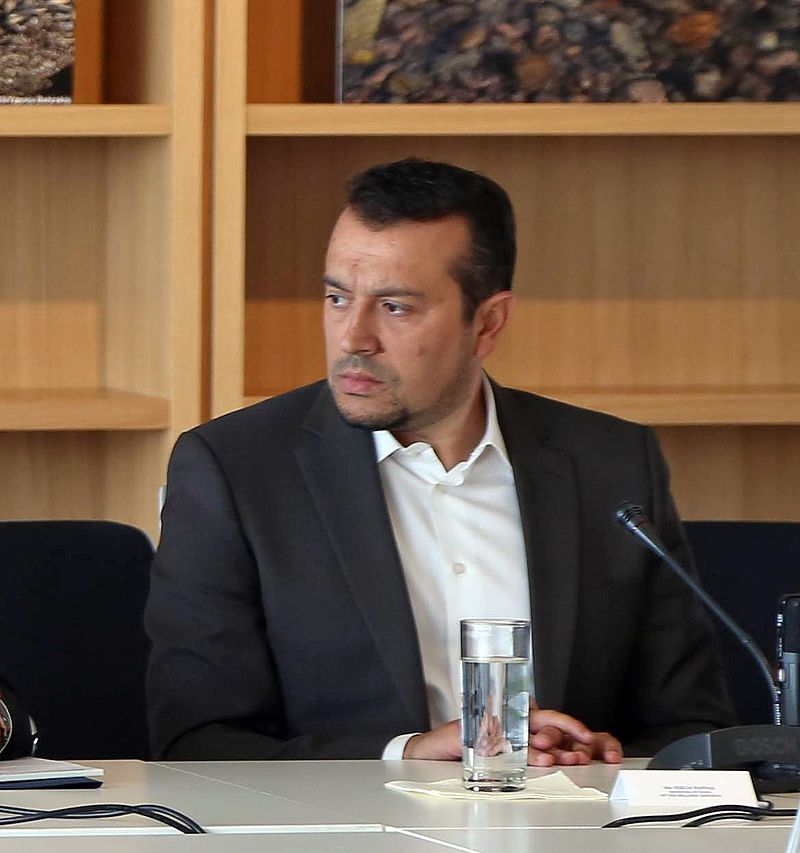

Digital Government Factsheet 2019
Greece
Table of Contents
Digital Government Highlights 6
Digital Government Political Communications 7
Digital Government Legislation 12
Digital Government Governance 16
Digital Government Infrastructure 22
Digital Government Services for Citizens 29
Digital Government Services for Businesses 35
Country Profile
Basic data
Population: 10 741 165 inhabitants (2018)
GDP at market prices: 184 713 million Euros (2018)
GDP per inhabitant in PPS (Purchasing Power Standard EU 28=100):67 (2017)
GDP growth rate: 1.9% (2018)
Inflation rate: 0.8% (2018)
Unemployment rate: 19.3% (2018)
General government gross debt (Percentage of GDP): 176.1% (2017)
General government deficit/surplus (Percentage of GDP): 0.8% (2017)
Area: 131 957 km²
Capital city: Athens
Official EU language: Greek
Currency: EUR
Source: Eurostat (last update:15 March 2019)
Digital Government Indicators
The following graphs present data for the latest Generic Information Society Indicators for Greece compared to the EU average. Statistical indicators in this section reflect those of Eurostat at the time the Edition is being prepared.
Percentage of individuals using the internet for interacting with public authorities in Greece | Percentage of individuals using the internet for obtaining information from public authorities in Greece |
| |
Percentage of individuals using the internet for downloading official forms from public authorities in Greece | Percentage of individuals using the internet for sending filled forms to public authorities in Greece |
Digital Government State of Play
The graph below is the result of the latest eGovernment Benchmark report, which monitors the development of eGovernment in Europe, based on specific indicators. These indicators are clustered within four main top-level benchmarks:
User Centricity – indicates to what extent (information about) a service is provided online and how this is perceived.
Transparency – indicates to what extent governments are transparent regarding: i) their own responsibilities and performance, ii) the process of service delivery and iii) personal data involved.
Cross-Border Mobility – indicates to what extent EU citizens and businesses can use online services in another country.
Key Enablers – indicates the extent to which 5 technical pre-conditions are available online. There are: Electronic Identification (eID), Electronic documents (eDocuments), Authoritative Sources, and Digital Post. Digital Post refers to the possibility that governments communicate electronically-only with citizens or entrepreneurs through e.g. personal mailboxes or other digital mail solutions.
These top-level benchmarks are measured using a life-events (e.g. mystery shopping) approach. Eight life events are included in the overall eGovernment performance score. Four of these life events were measured in 2013, 2015 and 2017 and the other four were measured in 2012, 2014, 2016, and again in 2018. The life events measured in 2017 were Regular business operations, Moving, Owning and driving a car and Starting a small claims procedure. The life events measured in 2018 are Business start-up, Losing and finding a job, Family life and Studying.
Source: eGovernment Benchmark Report 2018 Country Factsheets
Digital Government Highlights
Digital Government Political Communications
- Two new financial actions with a total budget of 100 million euros were launched in Greece. The Digital Step and Digital Leap are aimed at supporting businesses in all sectors for targeted investments in Information and Communication Technologies (ICT).
- The new digital General Commercial Registry and One Stop Services for Business is a flagship project to facilitate eBusiness in Greece. The main objective of the project is the upgrading of General Commercial Register, so that it becomes a modern and complete register for the benefit of business and administration.
- The Leps project was launched. It tests cross-border authentication and access to Correos electronic Services and to Hellenic electronic Services.
Digital Government Legislation
- Greece transposed Directive 2016/1148/EU of the European Parliament and the Council, which relate to measures for a high common level of network and information security throughout the Union and other provisions, into Greek legislation through Law 4577/2018.
- The Greek legislation enacted Law 4538/2018 on the underwriting, adoption and creation of a digital National Register of Minors.
- The recent Law N.4591 /2019 on web content accessibility guidelines, was incorporated into Directive 2016/2102.
- Greece adopted Law 4601/2019 on the issuing of electronic invoices in the context of public procurement.
Digital Government Governance
- Mrs. Maria Eliza Xenogiannakopoulou was appointed the legal successor to the Minister of Administrative Reconstruction.
- Μr. Gatos Vasileios was appointed the legal successor of the President of Information Society S.A.
Digital Government Infrastructure
The Citizen’s Register has been in operation since January 2018 and includes all the population data on demographic and registry events available to organisations certified in the system.
The Ultra-Fast Broadband (UFB) project will be implemented in geographical areas mutually exclusive of the rural Broadband and Superfast Broadband projects.
A Central Infrastructure for the Electronic Exchange of Documents between Public Bodies with “Advanced Digital Signatures" will be installed in a national cloud infrastructure.
Digital Government Services for Citizens and Businesses
Through an application, citizens have access to their personal health records.
A digital platform, One Stop Shop, allows persons to make their own company without having to visit any public service.
AADE is a new portal which provides and supports eServices to citizens, businesses and public sector bodies to achieve tax fairness and transparency.
Digital Government Political Communications
Specific political communications on digital government
Digital Step and Digital Leap
Two new Financial Actions with a total budget of 100 million euros were initiated. The Digital Step and Digital Leap aimed to support businesses in all sectors for targeted investments in Information and Communication Technologies (ICT). More specifically, the Digital Leap Action targeted the digital transformation of small and medium-sized businesses. Under the Digital Step Action, businesses submit investment plans ranging from € 5 000 to € 50 000, while in the Digital Leap Action, businesses can submit investment plans ranging from € 55 000 to € 400 000.
National Strategy for Administrative Reform
Since 2015, the Greek government has been drafting a strategy for reform in the public sector. The government, in cooperation with the Ministry of Digital Policy, Telecommunications and Information, recently announced a drastic transformation of the State, based on:
- Simplification of procedures through the assimilation and functional integration of global change, especially in the field of new technologies;
- Enhancing the efficiency of the services provided to citizens and businesses by optimising management, qualification and allocation of the human resources of the administration; and
- Strengthening of democracy, through the institutionalisation of meritocracy in staffing, transparency in the functioning and updating of the relationship between the state and the citizen.
The new policies will result in a drastic reduction in government operating costs and bureaucracy. Therefore, the strengthening of the presence of digital processes in public administration will:
Restrict personal transactions between citizens;
Guarantee objective procedures for all;
Speed up the handling of cases.
By 2020, the state hopes to have made a significant contribution to the qualitative upgrading of civil-state relations, gradually forming a collective, social footprint for the civil servant, and focusing on efficiency, helpfulness, courtesy, equality and protecting the dignity of the public.
National Digital Strategy
The National Digital Strategy (EPSS) is the road map and framework for digital growth. It comprises seven priorities:
- Developing national next generation connectivity infrastructure;
- Accelerating economic digitalisation;
- Push the ICT sector for the development of the digital economy and employment;
- Strengthening of human resources with digital skills;
- Fundamental review of the way Digital Services provide government;
- Removal of exclusions and diffusion of the digital economy benefits;
- Strengthening security and confidence.
Strategy for Digital Growth[1]
The main areas of improvement are:
- Open data;
- Interoperability;
- Smart applications and services;
- Access;
- Critical mass;
- Digital skills;
- IT Governance and change management.
The main strategic objectives are the following:
- Access to Advanced Digital Infrastructures;
- Smart and viable ecosystem for better quality of life;
- Competitive entrepreneurship in the international digital environment;
- Smart operation and interconnection of the State;
- Digital cohesion to tackle the social challenges.
Strategy for eGovernment
The main vision is ‘in the next seven years using ICT as a catalyst of development and modern governance tool, the Greek Public Administration will regain the trust of society and become more efficient and productive by providing citizens, and business user - centric online service that will be constantly upgraded’.
The strategy highlights the following principles:
- Interoperability;
- Comply or explain;
- Consolidation;
- No duplication;
- Once only;
- Feasibility and viability;
- Transparency;
- Accessibility;
- Security and privacy;
- Participation of citizens.
The strategy has the following three main strategic objectives:
- Modernisation of the State and Public Administration;
- Reconnect Citizens with State and Public Administration;
- Horizontal ICE policy co-ordination in Public Administration.
Action plan for eGovernment 2014 - 2020
This Action Plan is a seven-year plan including the actions needed to implement the strategy for eGovernment 2014-2020 and administrative reform and other measures to be financed by the programmes for the new 2014-2020 programming period. For practical reasons the 7-year programme consists of an initial detailed two-year action plan for eGovernment (ΗΛΔΙΑ) which is a rolling programme, tested, evaluated and reviewed at least annually or whenever necessary.
The realisation of the projects is in line with an enabling environment suitable for the design, development, delivery and evaluation of eGovernment services, in accordance with the respective strategy.
The most important technologies that will be adopted include IaaS (Infrastructure as a Service) and SaaS (Software as a Service), so as to make the best use of governmental cloud technologies (gcloud). The G-cloud is hosted in the Data Centre of the Information Society S.A. Other technologies concern data management (data-driven decision making, data processing/ big data/ data mining/ data governance) and information security.
Key milestones in the process are the creation of the governance structure of eGovernment, the staffing plan for the computer and eGovernment services and of public sector bodies and units with a similar object and the completion of catalyst projects forming the backbone of eGovernment. These projects include:
- Establishment and functioning of a single system of management of human capital of public administration (HRMS);
- IT public policy (IT Policy);
- eGovernment Now (eGov Now);
- Development of an integrated financial management system (ERP);
- CRM service system (CRMS).
In addition to these projects, it is extremely important to interconnect the registers in the country, which is an important element for the possibility of providing eGovernment services, as well as to put the eProcurement system into productive operation.
Key enablers
Access to public information
Di@vgeia Programme (Cl@rity)
Action plan for Open Government and Open Public Administration
The commitments undertaken in the Action Plan are structured in three main directions:
- Encouraging public participation;
- Open public data;
- Integrity and accountability.
eID and Trust Services
No political communication was adopted in this field to date.
Security aspects related to digital government
No political communication was adopted in this field to date.
Interconnection of base registries
National Action Plan – interconnecting of base registries
Within the National Action Plan, section 3.1.7 refers the Interconnecting of base registries for the improvement of the public sector productivity, e-Government services to citizens and the possibility of having joint databases. In this regard, priority is given to the interconnection of the following National Registries:
- National Registry of the Insured, Employed and Pensioners (Social Security Number)
- Police Registry (Identity Card Number)
- Tax Registry (Tax Identification Number) and
- Population Registry.
The specific sub-actions are as follow:
- Develop functional interfaces of four national registries;
- Develop functional interfaces of 250 registries;
- Undertake a study to determine the interconnection model of about 250 registries;
- Regulate the interconnection of 250 registries;
- Interconnect the Commercial Registries.
The interconnection of the aforementioned base registries will lead to a series of improvements, such as acceleration of the issuance of ID cards and passports through the data pumping from the National Citizens Registry.
General Commercial Registry & One Stop Services for Business
eProcurement
No political communication was adopted in this field to date.
Domain-specific political communications
Interoperability
eGovernment Interoperability Framework
Implementation of the Greek eGovernment Interoperability Framework (Greek e-GIF) institutionalised by the Greek State Law 3882/2010 began on 28 October 2006. The project was carried out within the framework of the Operational Programme for the Information Society (OPIS). It defined standards, specifications and rules for the development and deployment of web-based front and back office systems for the Greek Public Administration at national and local levels.
Digital Authentication Framework
This Framework supports eGovernment at Central, Regional and Local level and contribute, ensuring interoperability at the level of information systems, procedures and data. It sets the standards, the procedures and the technologies required for the registration, identification and authentication of the eGovernment services users, including citizens, businesses, public authorities and civil servants. It creates an integrated and coherent set of policies, regarding Digital Certificates and Public Key Infrastructures.
Certification Framework for Public Administration Sites and Portals
This Framework specifies the directions and standards to be followed by the public agencies at central or local levels, when designing, developing and deploying eGovernment portals of the Public Administration and supporting eGovernment services.
Interoperability and Electronic Services Provisioning Framework
This Framework defines the basic principles and the general strategy to be followed by the public agencies, when developing eGovernment Information Systems. It also provides organisational and semantic interoperability guidelines, as well as the technical specifications and communication standards.
Emerging technologies
No political communication was adopted in this field to date.
Digital Government Legislation
Specific legislation on digital government
Law on unified Mobility System in Public Administration and Local Government
Law 4440/2016 (Government Gazette 224/Α/2-12-2016) establishes permanent voluntary mobility of public sector personnel based on an electronic database and an evaluation procedure for submitted applications.
Law on Pension Rules Ratification of the Draft Financial Assistance Contract
Law 4336/2015 (Government Gazette 94/Α/14-08-2015) lays down the creation of a portal which provides easy access to legislation for citizens, both in its published form and its codified version.
Law on Democratisation of the Administration
Law 4325/2015 (Government Gazette 47/A/11-05-2015): extends the law 3979/2011 regarding “Electronic Identification” (Article 10) and “Electronic Exchange of Public Documents – Security of Information Systems of the Public Sector” (Article 13) while it amends the law 2690/1999 on the “Ex officio internal search of (electronic) certificates” (Article 12).
eGovernment Act (2011)
Law 3979/2011 (Government Gazette 138/A/16-6-2011) creates a general framework for eGovernment in public administration by: defining concepts; setting forth the basic principles; specifying the obligations of public sector bodies for the use and exploitation of new technologies; giving rights to citizens in relation to the processing of personal data and ICT use; regulating issues regarding the storage and transmission of electronic copies, files and protocols and; examining issues related to the authentication of user services. The Act lays particular emphasis on:
- Electronic communication and data exchange between natural/legal entities and the public sector;
- Electronic submission of applications, statements and documents;
- Dissemination of public sector information as well as disclosure of documents to citizens and businesses by electronic means;
- Subscription of citizens to eGovernment services;
- Authentication issues;
- Issuance, keeping, storage and types of digital certificates;
- Electronic payments;
- Issues regarding personal data protection and privacy.
Key enablers
Access to public information
Web Content Accessibility Guidelines Law
The recent law N.4591 /2019 incorporates in the Greek legal order Directive 2016/2102 in order to ensure the right of active and equal access of all users to the websites and applications for mobile devices of the public sector organisations.
Law on the Ratification of the Administrative Procedure Code and other provisions
Law no. 2690/1999 on the Ratification of the Administrative Procedure Code and other provisions specifies that "interested persons have a right to access administrative documents created by government agencies". The request must be in writing. Administrative documents are defined as "all documents produced by public authorities such as reports, studies, minutes, statistics, administrative circulars, responses, opinions and decisions". In addition, the 1999 law allows persons with a "special legitimate interest" to obtain "private documents" relating to a case about them. Documents relating to the personal life of an individual are not subject to the Act. Secrets defined by law, including those relating to national defence, public order and taxation cannot be released. Documents can also be restricted if they relate to discussions of the Council of Ministers or if they could substantially obstruct judicial, military or administrative investigations of criminal or administrative offences.
Law on Re-use of Greek Public Sector Information
The Reuse of Public Sector Information Legislative Framework comprises a set of laws implementing EU Directives to reuse different types of public sector information and increase transparency in the activities of the public sector authorities.
In 2003, Greece implemented Directive 2003/98/EC of the European Parliament and of the Council. This law was amended by law 4305/2014 in 2014.
eID and Trust Services
This presidential decree came into effect on 25 June 2001 and implemented European Directive 1999/93/EC on a Community framework for electronic signatures. It defined electronic signatures and advanced electronic signatures. It also dealt with: the legal consequences of electronic signatures, the liability of suppliers of certification, the obligation to protect personal information, terms in effect for recognised certificates and suppliers, assurance of the liability of the creation of a signature and recommendations for the verification of the signature.
Security aspects related to digital government
Implementation of the Directive on measures for a high common level of security of network and information systems across the Union
The Greek Government has transposed the Directive 2016/1148/EU of the European Parliament and of the Council on measures for a high common level of security of network and information systems across the Union into Greek legislation.
National Cyber Security Strategy
In March 2018 the Minister of Digital Policy Telecommunications and Information, Nikos Pappas, approved the National Cyber Security Strategy. The National Cyber Security Strategy is an important recent development. Its importance is crucial given the increasing use of the Internet and Information and Communication Technologies in every aspect of public and private sector activities. Its mandate is to create a secure Internet environment, infrastructure and services that boost citizens' confidence and lead them to the further use of new digital products and services and to stimulate the economic development of our country.
Overall responsibility for implementation of the National Cyber Security Strategy is borne by the National Cyber-Security Authority. It was established by and operates within the General Secretariat for Digital Policy of the Ministry of Digital Telecommunications and Information Policy. The Authority, as a high-level political-governmental organisation with specialised executives, monitors and implements the actions of the National Cyber Security Strategy. It is also responsible for coordinating the cyber-security sector in Greece both in the public and private sectors.
Law on the Protection of Personal Data and Private Life with regard to Electronic Telecommunications (2006)
Law 3471/2006 was adopted on 28/06/2006, revising Law 2472/1997, and intending to the enactment of preconditions with regard to the personal data processing and for the assurance of the confidentiality in telecommunications. Law 3471/2006 was amended by Law 3917/2011 and Law 4070/2012.
Interconnection of base registries
National Register of Minors Law
The Greek Government adopted the Law 4538/2018 of the Ministry of Labor, Social Security and Social Solidarity on the underwriting and adoption and the creation of a digital National Register of Minors. The law aims at improving the transparency and speeding up of the adoption and underwriting processes. The entire life cycle of the service will be fully digitised.
This law establishes the National Register of Candidate Parents and Approved Underwriters of Minorities by the National Center for Social Solidarity (EKKA), the maintenance of a National Register of Minors and Special Registers from all child protection and care units operating either as a NPO, which lists the details of the minors that host it.(http://www.ypakp.gr/) The law establishes the establishment of a National Register of Candidate Parents and Approved Underwriters of Minorities by the National Center for Social Solidarity (EKKA), the maintenance of a National Register of Minors and Special Registers from all child protection and care units operating either as a NPO, which lists the details of the minors that host it.
eProcurement
Electronic invoices Law
Law 4601/2019 corporate transformations and harmonisation of the legislative framework with the provisions of Directive 2014/55/ EU of the European Parliament and of the Council of 16 April 2014 on the issuing of electronic invoices in the context of public procurement.
Public Procurement Law 4412/2016
Law 4412/2016 for Public Procurement (Government Gazette A’/08.08.2016) amended Law 4155/201. It extends the provisions for eProcurement and consists of an adaptation of procurement to Directives 2014/24/EU and 2014/25/EU.
Among other provisions, Law 4412/2016 stipulates that public authorities are required to use the National Electronic Public Procurement System (NEPPS) at all stages of the procurement process, for contracts with an estimated value in excess of sixty thousand Euros, excluding VAT.
Presidential Decree 118/2007 on the Regulation of Public Procurement
In conjunction with the introduction of the eProcurement legislation, targeting the harmonisation with the relevant EU Directives, additional efforts were undertaken by the Greek Government to revise the Greek public procurement legal framework, consisting of a complex set of laws, presidential decrees and regulations. To this end, the presidential decree 118/2007 simplified the public procurement procedures, broadens participation to public sector competitions and introduced increased penalties in case of non-compliance to the specific competition terms and conditions. The new decree partially revised the existing legislation in this area while at the same time still maintaining a major part of it.
Presidential Decree 59/2007
Presidential decree 59/2007 of 16 March 2007 aims to harmonise Greek eProcurement legislation with European law. In particular, the decree implements into national law the Directive 2004/17/EC of the European Parliament and of the Council of 31 March 2004, coordinating the procurement procedures of entities operating in the water, energy, transport and postal services sectors.
Presidential Decree 60/2007
This decree 60/2007, of 16 March 2007, implemented into national law Directive 2004/18/EC of the European Parliament and of the Council of 31 March 2004, on the coordination of procedures for the award of public works contracts, public supply contracts and public service contracts (as amended by European Parliament Directives 2005/51/EC and 2005/75/EC).
Domain-specific legislation
eHealth law
Law 4600/2019 (articles 83,84,101) Modernisation and Reform of the Institutional Framework of Private Clinics, Establishment of a National Public Health Organisation, Establishment of a National Institute of Neoplasia.
Presidential Decree 131/2003 on eCommerce
Adopted on 16 May 2003, this presidential decree transposed the Directive 2000/31/EC of the European Parliament and the Council on certain legal aspects of information society services, in particular electronic commerce, in the Internal Market (Directive on electronic commerce).
Interoperability
Electronic Government Now
The most relevant and recent program regarding interoperability and base registries in Greece is the Electronic Government Now (eGov Now). It defines principles and tools for interoperability within public sector information systems, including large databases and base registries considered as key modules of electronic government. It also supports other structural elements, such as documents exchange and information, certified document sharing, interoperability interfaces, etc. Its completion will lead to better use of existing information in the base registries, by promoting better collaboration between departments, such as. Ministry of Health, Employment Agency, Ministry of Labour, and Ministry of Environment. The Ministry of Interior and Administrative Reform is responsible for executing the project. All public administration bodies will take account of the principles, specifications and standards set by the project.
Emerging technologies
No legislation was adopted in this field to date.
Digital Government Governance
National
Policy
Ministry of Telecommunications and Media Policy
|  | Nikos Pappas Minister of Digital Policy, Telecommunications & Media Contact details: Ministry of Digital Policy, Telecommunications & Media Fragkoudi 11 and Al. Pantou, 10163, Athens Tel.: +30 210 9098600-2 E-mail: minister@mindigital.gr, sec@mindigital.gr Source: http://www.mindigital.gr/ |
Stelios Rallis Minister Secretary General for Digital Policy Contact details: Ministry of Digital Policy, Telecommunications & Media Chandri 1 & Thessalonikis, 18346, Athens Tel.: +30 210 4803255, 210 4802010 E-mail: gen_gramm@gsdp.gr Source: http://www.mindigital.gr/ |
Ministry of Administrative Reconstruction (former Ministry of Administrative Reform and eGovernment)
The Ministry is an initiator of eGovernment strategies and policies aiming to develop IT in the public sector. It aims to implement the government policy for the introduction, implementation and development of information and technology in the public sector.
Maria Eliza Xenogiannakopoulou Minister of Administrative Reconstruction Contact details: Ministry of Administrative Reconstruction Av. Vasilissis Sofias 15, 10674, Athens Tel.: +30 213 1313590 /508 /603 E-mail: ypourgos@ydmed.gov.gr Source: http://www.minadmin.gov.gr/ |
Grigoris Theodorakis Secretary General for Administrative Reconstruction Contact details: Ministry of Administrative Reconstruction Av. Vasilissis Sofias 15, 10674, Athens Tel.: +30 213 1313482/6/9, 213 1313679 E-mail: ggd@ydmed.gov.gr Source: http://www.minadmin.gov.gr/ |
IT and Communications Committee
The Committee was initially founded in 2011 and re founded in 2014 (in paragraph 3 and 4 of article 26 of law 4314 (Government Gazette 265/A/2014). Its main responsibility is to prepare and co-ordinate the plan of actions related to the Digital Agenda implementation and eGovernment. The Joint Ministerial Decision setting the details of the Committee’s Responsibilities is pending.
Coordination
Ministry of Administrative Reconstruction (former Ministry of Administrative Reform and eGovernment)
The Ministry is responsible for the organisation and operation of the public sector. Thus, it coordinates public sector bodies on issues such as the modernisation of the organisational structure, the overall policy agenda and the development of IT. In addition, the Ministry supervises the National Centre for Public Administration & Local Government and the Information Society SA.
Implementation
This state-owned company is intended to be the main government agency implementing projects related to information technology, communications, eGovernment and administrative reform. This will be achieved by merging the company with other institutions that maintained activities in the relevant field. The company, created in 2001, also supported the implementation of the Operational Programme for the Information Society (OPIS), and the Operational Programmes ’Digital Convergence’ and ’Public Administration Reform’.
The Observatory aims at conducting relevant studies and contributing to the policy formulation processes to the Greek Government and any other party interested.
Gatos Vasileios President of Information Society S.A. Contact details: Information Society S.A. Chandri 3 & Kyprou, 18346, Athens Tel.: +30 213 130 0700 Fax: +30 213 130 0801, 210 973 6760 E-mail: info@ktpae.gr Source: http://www.ktpae.gr/index |
IT and Communications Committee
The Committee is responsible for the implementation of the institutional framework governing the development of IT and electronic communications for the public administration. It recommends improvements, operational and organisational restructuring for entities and services of the public sector, including ministries, for the most effective promotion of government work in the field of eGovernment. Furthermore, it establishes management teams to oversee, monitor and promote the implementation of relevant projects.
All Government ministries and agencies
Individual government bodies are responsible for the implementation of departmental eProjects.
Support
This operational programme aims to support the Greek administration to become coherent, well-coordinated, flexible, outward looking and effective, to restore trust relationship with citizens and businesses providing citizen-centred and continuously upgraded services constituting one of the key pillars for the recovery of the country via three funding priorities:
- Strengthening organisational, institutional and operational capacity of public administration and local authorities for the benefit of citizens and businesses;
- Promotion of eGovernment in the public sector;
- Development of human resources in the public sector, through the rational allocation of human resources, the provision of upgraded services, and training.
Managing Authority of the Operational Programme ‘Public Administration Reform’
The Managing Authority of the Operational Programme ‘Public Administration Reform’ became operational in February 2008. It is a comprehensive package of complementary interventions in order to address the underlying issues of public administration from the point of view of actors in an administrative capacity (human resources, legal framework, structures and systems) and aims at shaping the public policies of the specific programme and their implementation by the departments of Public Administration. The Operational Programme was for the period of 2008 – 2013.
The Information Society S.A. supports government departments and agencies in all stages of ICT project design, implementation and follow-up.
Base registry coordination
Ministry of Administrative Reform and e-Government (MAREG)
The Ministry of Administrative Reform and e-Government (MAREG) facilitates the interconnection among the base registries. It is also responsible for the policies on organisation structures of public authorities (their operation and personnel), the e-Government policy and operational program for the public administration reform.
Ministry of Interior and Administrative Reform
The Ministry of Interior and Administrative Reform (the part of ex Ministry of Administrative Reform and e-Government that discontinued in January 2015) is responsible for the organisation and operation of the public sector. The central service of this Ministry is also the competent body for designing, operating and supporting the following information systems:
- Electoral Rolls: is an on-going registry of eligible voters for European elections, local government elections, parliamentary elections, and referenda,
- The National Civil Status Registry (Ethnico Dimotologio): is a central database projection of the local municipality databases of citizen’s civil status. All changes to the civil status of a person are registered at the competent municipality database. Then the central database is updated automatically.
- The National Population Event Registry (Ethnico Lyxiarchio): supports an event-based registration system. Events like birth, marriage, cohabitation agreement, death, and divorce are registered centrally.
- The National Naturalisation Registry: facilitates individual applications for nationality acquired by naturalisation.
- The Immigration Registry: facilitates EU policy-based legal immigration requests.
Audit
The Hellenic Court of Audit, according to Article 98 of the Constitution, is responsible for auditing the expenditure of the state and local agencies, or other entities subject to its audit by special laws. This includes contracts of great financial value made by state entities and the accounts of public accounting officers and local government agencies. It also includes provision of expert opinion on laws on pensions, presenting to Parliament a report on the Annual Financial Statement and the Balance Sheet of the State and adjudicating on pension cases as well as cases related to the audit of public accounts and the liability of civil or military public servants.
Data Protection
Independent Data Protection Officer (DPO)
An independent DPO was established at the Ministry of Health to ensure and monitor compliance with the provisions of GDPR within the National Health System
Hellenic Data Protection Authority
The Hellenic Data Protection Authority is an independent administrative body operating since November 1997. Its mission is to supervise the implementation of Law 2472/1997 on the Protection of Individuals with regard to the Processing of Personal Data. The Authority is answerable to the Minister of Justice.
Subnational (federal, regional and local)
Policy
Regional Administrations, Prefecture Administrations and Municipalities
The Greek State is highly decentralised and the main regional and local government administrative units, namely the 13 peripheries and the 325 municipalities, are fully self-governed and thus responsible for the administration of local matters, including the eGovernment strategic organisation.
Coordination
National eGovernment bodies
National eGovernment bodies are responsible for the coordination of projects at regional and local levels.
Implementation
Regional Administrations, Prefecture Administrations and Municipalities
Under the programme Kalikratis many competences, related to eGovernment implementation, have been transferred to the municipal level. For instance, since 2010 some services of the Urban Planning Authorities, along with some social protection services have been transferred to the municipal level.
Support
The company supports the public sector’s vehicles in the areas of public consultation, transparency and materialisation of all projects related to Information Technology, eGovernment and Public Administration’s reorganisation.
Hellenic Agency for Local Development and Local Government (EETAA)
The Agency provides local government agencies, the public sector and social agencies with the professional and technical IT support they require. It operates in the form of a joint-stock company.
Base registry coordination
No responsible organisations were reported to date.
Audit
The Hellenic Court of Audit is responsible for auditing expenditure and monitoring the revenue of the state, as well as local administration agencies and other public corporate bodies.
Data Protection
No responsible organisations were reported to date.
Digital Government Infrastructure
Portals
TAXISnet
Taxisnet is a Greek online tax and custom services portal, including e‐filing of VAT forms with payment through banking services, e‐filing of income tax forms, personalised information for income tax assessment and e‐delivery of tax certificates. It is a portal that citizens and professionals can use to interact with the tax offices in order to declare sales, value added taxes, income, and collect necessary certificates among other various applications. Taxisnet is daily accessed by a large number of users with different characteristics, educational levels and objectives.
AADE portal
On 1 January 2017, the Independent Authority for Public Revenue was established by law 4389/2016, replacing the GSPR in line with international standards regarding tax administration autonomy. AADE is a new portal which provides and supports e-services to citizens, businesses and public sector bodies, with a view to facilitating transactions, reducing red tape, simplifying processes and achieving tax fairness and transparency
National Portal of Public Administration ERMIS
The National Portal ERMIS aims to provide integrated and secure eGovernment services at all levels, from a central point, thus becoming the benchmark of the National System Authentication. Through the new authentication system, the user, citizen or enterprise, will submit a request to the portal with an electronic signature. The request will then be identified and initiated by the appropriate agency. By this way the security, validity and legality of digital transactions are ensured.
The portal provides, from a central point, complete briefings to Greek citizens and enterprises with regards to their transactions with the public administration (natural or electronic). Ermis functions as an electronic shop of the Public Administration running in three key areas:
- Provision of information: It reliably informs citizens and businesses on their transactions and interactions with the state apparatus.
- Interoperability: The portal provides the necessary infrastructure to fully support interoperability between information systems of public administration.
- Security of transactions: Ermis provides secure eGovernment services at every level with the use of modulated digital authentication methods.
Interoperability Centre
The Ministry of Finance launched a productive operation of the Interoperability Centre, comprising an Interoperability Request Management application and the Enterprise Service Bus (ESB), which is a Web Services Management and Support platform.
The Interoperability Center is an information system aiming at the interconnection of the electronic services of the Public Administration. The Interoperability Center provides a single environment (infrastructure) for the installation and use of Internet services, through which operational data is exchanged.
Web services are data exchange services between information systems or applications. They are available to government agencies on a 24-hour basis for seven days a week and contribute to the provision of information between public bodies and the achievement of economies of scale through the efficient processing of information
Diavgeia – Transparency portal
All decisions of public administration bodies are published on this portal. As from 2017, the portal has become part of the G-cloud website.
General Commercial Registry
Th General Commercial Registry (Geniko Emboriko Mitroo-G.Ε.ΜH.) provides two new distinct services, the Electronic Certificate and Copy Service, and the Electronic Application for Registration in the General Commercial Registry.
The need to establish a single framework for the organisation, information and use of the registries of public administration has always been a standing requirement of transactions with public authorities and broader public sector.
Some of the problems faced especially by the business community concerning the overall business processes were the duplication of data, nomenclature, different encodings, fragmented data collection by authorities, lack of business historical data etc.
GEMH was established with the goal of to radically reforming the functioning of individual (fragmented) registries. This requires a transition from the current manuscript mode of information processing and current task management to a single automated processing environment with the high efficiency of a General Electronic Commercial Registry.
GEMH will provide publicity and statistical analysis at a national level. In addition, it will serve as a means of protection for third parties, both for the General Secretariat of Commerce, and the part of the GEMH that concerns it and for the wider public sector, when the entire project is completed.
GEMH provides digital public services (online completion) as follows:
- Registering a company in GEMH;
- Register with central / regional / local government;
- Publish registration in Official Journal or equivalent.
eThemis - Online Legislation portal
The eThemis online legislation portal has been realised within the framework of a project regarding the ‘Design and Implementation of a System for Automating the Administration, Archiving and Dissemination of Legislation to the Broader Public’. This project was initiated in December 2006 with a budget of EUR 2.3 million and was carried out by the Information Society S.A. The eThemis portal, which was introduced in November 2008, is aimed at providing online access to all Greek legislation (including laws, decrees and regulative decisions as published in the Official Government Gazette) since the establishment of the Greek State. This service is offered free of charge, while the content of the portal is regularly updated.
Within the portal, the legislation is clearly structured around a total of 40 thematic areas and fields of interest, which are particularly tailored to meet the needs of different categories of users, including citizens, enterprises and layers. In addition, a keyword-based search facility allows users to easily locate the desired legal information. The service is complemented by a telephone-hotline for the provision of support.
Networks
National Public Administration Network (SYZEFXIS)
The SYZEFXIS network is a project of the Greek Ministry of Interior, Public Administration and Decentralisation, aiming at the development and updating of the public sector's telecom infrastructure by satisfying all their needs for communication through telephony (telephone communication between organisations), data (PC's communication - Internet) and video (teleconference - training).
The project's objectives are: (1) The improvement of public services' functions supported by the upgrade of telecommunications infrastructure between them, through the offer of advanced and low-cost telematics. (2) The provision of integrated services to citizens using modern and user-friendly government information and transaction systems.
It covers the entire Greek territory, linking approx. 6,000 bodies in 201ç, and is the largest and most modern broadband network administration across Europe. Through SYZEFXIS the most modern practices and advanced services in telecommunications and the Internet are being made available to public bodies. The network ensures the infrastructure required to link the information systems, in order to develop and provide electronic services to citizens and businesses. At the same time, it contributes to a drastic cost reduction of any telecommunications carrier and the Greek public sector in general. In July 2007, SYZEFXIS became the fourth national network (following those of Belgium, Luxembourg and Spain) connected to the modern European public administration network TESTA.
Greek Research and Technology Network (GRNET)
GRNET is the National Research and Education Network (NREN) provider, operating the Greek academic network that connects local universities and research institutions via dark fibre at speeds up to 10Gbps, and offering to the Greek R&E community access to the pan-European GEANT network through 4x10Gbps links.
GRNET also plays a key role at the national level in the field of distributed and large-scale research infrastructures including Grid, Cloud and HPC. The company coordinates the Greek National Grid Initiative – HellasGrid, with more than 1,400 CPUs and 200 Terabytes of storage and is member of EGI pan-European Grid infrastructure. GRNET has developed and operates its own public IaaS cloud solution named Okeanos, offering cloud resources to Greek Universities.
Data Exchange
Business Intelligence System - BI-Health
The BI-Health is a modern information system that strengthens the steady administrative information actions of the Ministry of Health. BI - Health plays a central role in the organisational, operational and economic modernisation of the National Health System through the simplification of administrative information processes, effective management of resources and detailed control of operating and financial results.
The BI-Health system ensures the collection and processing of the analytical and aggregated data of the Territorial Public Health Units at a central operational level and allows the dissemination of information to the management mechanisms with the ultimate aim of improving the quality of the provided health services.
Citizens can publish, discover, reuse, and visualise all published data for free. Operating since 2010, geodata.gov.gr was one of the first open data catalogues in the world, contributing to the national and international open government agenda. It is designed, developed, and maintained by IMIS/Athena RC, with the aim to provide a focal point for the aggregation, search, provision and visualisation of open geospatial information.
In 2017, the number of provided datasets increased: over 6,400 datasets from 265 organisations.
Documentation Model for Public Administration Processes and Data
This is a practical guide, which defines the notation, the rules and the specifications for the design, implementation and documentation of the Public Administration processes, documents and electronic data exchange messages.
eID and Trust Services
Leps Project
LEPS enable existing certified e-Delivery, e-Notifications and remote e-Signature services in the private sector to use the pan European elD infrastructure for cross-border electronic identification and authentication, while complying with elDAS specifications and rules. As part of the project, the objective is to customise the Greek Financial Services and Integration with elDAS Infrastructure and customise the Greek Post Electronic Services and Integration with elDAS Infrastructure.
Social Security Registration Number
With regards to digital infrastructure related to eID and trust services, the first stage of the plan was accomplished with the allocation of the Social Security Registration Number (AMKA) to every citizen which was a key issue towards the accomplishment of the electronic (medical) Prescription program in such a way that ensures reliability, security and transparency of the information handled.
National Authentication System
Furthermore, in the Public Administration context, there is currently a large-scale project under implementation, namely the National Authentication System.
e-Health
Health eID is implemented through a CEF call. There is a MoU between the, Civil Registry, Ministry of Interior, Ministry of Administrative Reconstruction, Electronic Governance of Social Security, Aristotle University of Thessaloniki, and the governments of Germany and Portugal. The action aims at developing, testing and delivering to the European Commission and the Member States (MSs) a reference implementation of an eID connector, linking the national OpenNCP-based National Contact Point for eHealth (NCPeH) to the eIDAS node and the relevant attribute providers.
ERMIS eID card
The government eID card called ERMIS is used by citizens to access public eGovernment electronic services. ERMIS eID is connected to production environment of STORK2.0 node, which has been turned into an eIDAS (“plugin”) node, while TAXIS eID is connected to preproduction environment of the same node. ERMIS is under the responsibility of Ministry of Administrative Reconstruction.
PKI-cards are issued by ERMIS. More than 20 000 PKI-cards were issued in 2018 and used by public servants as well as private sector companies that participate in eProcurement tenders. At present, there are 75 000 active PKI-cards that hold ERMIS certificates
Hellenic Academic & Research Institution Authority (HARICA)
The HARICA Public Key Infrastructure (PKI) is a trusted entity, which certifies the identities of network users and servers affiliated with Academic and Research Institutions of the Hellenic Republic. The HARICA PKI is a consortium whose membership includes academic institutions, research institutions, and the Greek Research and Technology Network (GRNET), which is the Greek National Research and Educational Network (NREN). It began during the VNOC2 project (funded by GRNET through the Operational Program 'Information Society'). This service is available for the members of the Hellenic Academic and Research Institutions.
eProcurement
Promitheus
The Single Public Procurement Authority (SPPA) was legally established to coordinate the national strategy on public contracts 'NSFR plan: National Strategic Reference Framework 2007–2013' agreed with the EU, IMF and ECB, overseeing Greek reforms to reduce and control state expenditure on public contracts.
A portal for public procurement, Promitheus, facilitates and encourages the participation of economic bodies involved in public tenders to develop competition in tendering procedures. This is done in accordance with the principles of transparency and equal treatment, and to ensure compliance with the rules and principles of European and national legislation on public procurement. The SPPA is under the Ministry of Development, Competitiveness and Shipping. The Ministry of Environment, Energy and Climate Change is consulted for green public procurement. The legal framework surrounding the set-up of the authority is still pending the update and finalisation of the laws.
eInvoicing
No particular infrastructure in this field was reported to date.
ePayment
No particular infrastructure in this field was reported to date.
Knowledge Management
Opengov.gr is a portal dedicated to responding to citizens' needs for information, merit and participation in shaping decisions. It offers the maximum possible publicity in all aspects of government policy-making. The portal was designed to serve the principles of transparency, deliberation, collaboration and accountability. It includes three initiatives:
- Οpen calls for the recruitment of public administration officials. Top level and mid-level openings in the public sector are available on the Internet. Applications are submitted online using a platform available on the opengov.gr website.
- Electronic deliberation. Almost every piece of draft legislation and policy initiative is posted in a blog-like platform prior to submission to parliament. Citizens and organisations can post comments, suggestions and criticisms article-by-article.
- Labs OpenGov. An open innovation initiative that brings together ideas and proposals from citizens, the public and the private sectors. Labs.OpenGov.gr attempts to release the power of decentralised knowledge and explore new ways to tackle modern public administration problems.
The Citizen Service Centres (KEP) and their online platform (eKEP)
The Citizen Service Centres (or ’KEP’ in Greek transliteration) are the administrative one-stop service centres where citizens can access public service information and over 1 000 standardised administrative procedures. The‘KEP network is supported by an online platform, eKEP. The Citizen Service Centres are linked together by an IP network and use the eKEP platform to file and manage citizens’ requests, create a relevant eDirectory, electronically register ‘KEP’ mail, and monitor the requests’ progress all the way through settlement. Accessible through the one-stop service centres across the country or through the Internet, the eKEP platform supports the use of certified digital signatures, enabling real time online transactions between Public Administrations.
The service is complemented by a 24/7/52 administrative information call centre (four-digit 1500 telephone service), where citizens and enterprises can request and obtain a large number of different certificates. The Citizen Service Centre Internet portal receives over 9 million visits each month. More than 60,000 citizens visit Citizen Service Centres every day to make transactions with the Government. Since March 2007, Greek enterprises have also used the service. The average service time for a response usually does not usually exceed seven days.
Cross-border platforms
No particular infrastructure in this field was reported to date.
Base registries
Since January 2018, citizens no longer need to go to town halls or Citizens’ Service Centres (KEPs) to obtain personal documents as these are available online. This portal reduces the number of signatures needed and relieves citizens of the need to produce multiple documents for simple administrative procedures.
The Citizen's Register (MP) is the new Domestic Information System of the Ministry of Interior that links on-line registry services and demographics across the country. It has been in operation since January 2018 and includes all the population data on demographic and registry events that are available to organisations certified in the system. There is interoperability with the Registries and Municipalities with the Citizen's Register Information System for the provision of digital public services regarding:1) birth, 2) marriage or civil union and 3) death. There is also interoperability with Citizens Service Centres (one stop shops) to provide digitally citizens birth certificates and family status certificates.
Online Media Register
Τhe Online Media Registry is an application where you can register in the Electronic Media Business Register (Articles 52, 53 and 54 of Law 4339/2015). The Electronic Media Register is part of government initiatives to promote transparency and legitimacy in the context of the smooth functioning of the Republic. Τhe privileges of the members of the Registry are the right of access to state advertising, the free provision of plagiarisation services in cooperation with the Organisation for Collective Management of Speech Projects, collaborations in research and educational programs of the National Audiovisual Center and accreditation of journalists.
Hellenic Republic Human Resources Registry
The Hellenic Republic Human Resources Registry has already been fully implemented in a digital forum called Apografi. It provides data & applications for more efficient human resource management. Digital subsystems such as Digital Organisational Structure, Mobility, Evaluation have been added.
The Digital Organisational Structures is a complete digital organisational chart of Public Administration that reflects the structure and staffing of all public bodies. Mobility means the rotation, transparency, speed and efficiency. Evaluation means the evaluation of civil servants to improve their individual performance and increase greater efficiencies in the public service.
Digital Register about vehicles
The Digital Register about vehicles is under development. An Information System for data observation and simplification is in progress processes concerning life-cycle management of public vehicles, by the Ministry of Administrative Reconstruction. This is part of in the Operational Program "Public Sector Reform 2014-2020".
Business Registers Interconnection System (BRIS)
In the case of business registries, the Business Registers Interconnection System (BRIS) infrastructure aims to:
enable the access to information on EU companies for the public and ensure safe and secure interconnection among EU Business registries.
According to Directive 2012/17/EU on the interconnection of business registers and the Implementing Regulation (EU) 2015/884, Member States should establish an information system that interconnects their central, commercial and companies registers.
Digital Government Services for Citizens
The information in this section presents an overview of the basic public services provided to the citizens. These were identified taking inspiration from Your Europe, a website which aims to help citizens do things in other European countries – avoiding unnecessary inconvenience and red tape in regard to moving, living, studying, working, shopping or simply travelling abroad. However, the categories used in this factsheet aim to collect a broader range of information, focusing therefore not only on cross-border services, but also on national services.
The groups of services for citizens are as follows:
- Travel
- Work and retirement
- Vehicles
- Residence formalities
- Education and youth
- Health
- Family
- Consumers
Travel
Documents you need for travel in Europe | |
Passport | |
Responsibility: | Hellenic Police, National Passport Centre |
Website: | |
Description: | Information and forms to download. Monitoring of an application's status. |
Travel Card | |
Responsibility: | Ministry of Infrastructure and Transport |
Website: | |
Description: | Greece has introduced a single electronic card, the ATH.ENA card, for all means of public transport in the city of Athens. |
Money and charges | |
VAT refunds and excise duties | |
Responsibility: | Central Government, Ministry of Finance, General Secretariat for Information Systems |
Website: | |
Description: | The ‘TAXISnet’ service, introduced in May 2000, provides a variety of services to individual and corporate taxpayers, like electronic submission of VAT forms. |
Work and retirement
Working abroad, finding a job abroad, retiring abroad | |
Job search services by labour offices | |
Responsibility: | Central Government, Ministry of Employment and Social Solidarity, Greek Manpower Employment Organisation |
Website: | |
Description: | Fully functional job search online service. Citizens and employers can search for jobs/manpower. They can refine searches according to a variety of criteria. By specifying the geographical location of interest, they are respectively presented with a list of companies seeking manpower in specific regions (along with relevant contact details) or with a list of citizens seeking for a job. |
Professional qualifications | |
Legal information system | |
Responsibility: | |
Website: | |
Description: | The eThemis online legislation portal was realised within the framework of a project regarding the ‘Design and Implementation of a System for Automating the Administration, Archiving and Dissemination of Legislation to the Broader Public’. |
Unemployment and Benefits | |
Unemployment benefits | |
Responsibility: | Central Government, Ministry of Employment and Social Solidarity, Greek Manpower Employment Organisation |
Website: | |
Description: | Information on the procedures & certificates required, enabling citizens to start the procedure in order to apply for unemployment benefits, electronic submission of forms. |
Vehicles
Driving Licence | |
Driver’s licence | |
Responsibility: | Central Government, Ministry of Infrastructure, Transports and Networks |
Website: | |
Description: | Information and forms to download, enabling citizens to start the procedure to obtain a driving licence. |
Registration | |
Car registration (new, used, imported cars) | |
Responsibility: | Central Government, Ministry of Finance, General Secretariat for Information Systems |
Website: | |
Description: | Online registration of a new car and the ability for online submission of changes in the data of already registered vehicles. |
Residence formalities
Residence rights | |
Housing (building and housing, environment) | |
Responsibility: | Prefectural Administrations |
Website: | |
Description: | Information and forms to start the procedure to obtain a building or renovation permission. |
Document and formalities | |
Announcement of moving (change of address) | |
Responsibility: | Central Government, Ministry of Finance, General Secretariat for Information Systems, Citizen Service Centres (KEP) |
Website: | http://www.gsis.gr/gsis/info/gsis_site/index.html; http://www.ermis.gov.gr |
Description: | In Greece, there is no general obligation to inform the authorities of a change of address. The only exception is for those on a taxable income, for whom the obligation exists. Taxpayers should inform their local tax office for every change of address, by submitting the appropriate form. Information and forms to download. |
Declaration to the police (e.g. in case of theft) | |
Responsibility: | Central Government, Ministry of Citizen's Protection |
Website: | |
Description: | Information only. |
Education and youth
School & University | |
Enrolment in higher education/university | |
Responsibility: | Central Government, Ministry of Education, Lifelong learning and Religious Affairs |
Website: | |
Description: | Information and forms to start the procedure for digital enrolment in higher education and Greek universities. |
Public libraries (availability of catalogues, search tools) | |
Responsibility: | Central Government, Ministry of Education, Lifelong learning and Religious Affairs |
Website: | |
Description: | The website of the Ministry of Education, Lifelong learning and Religious Affairs provides a full list of Greek libraries. The National Library of Greece offers the possibility to search for a specific title and make an electronic reservation. The Hellenic Academic Libraries Link offers the possibility to search for a specific title. |
Student grants | |
Responsibility: | Central Government, Ministry of Education, Lifelong learning and Religious Affairs, State Scholarships Foundation |
Website: | |
Description: | The State Scholarships Foundation (I.K.Y.) grants scholarships for postgraduate or postdoctoral studies to Greek and foreign graduates. Its administrative responsibility includes the Erasmus exchange programme. Information and forms are available to download. |
Researchers | |
Information and assistance to researchers; research funding support | |
Responsibility: | EURAXESS Greece |
Website: | |
Description: | EURAXESS Portal of the Hellenic Industrial Property Organisation (OBI): the main objective of this portal is to help foreign researchers planning to come to Greece or already staying in Greece look for assistance, career opportunities or funding. |
Public libraries (availability of catalogues, search tools) | |
Responsibility: | Central Government, Ministry of Education, Lifelong learning and Religious Affairs |
Website: | |
Description: | The website of the Ministry of Education, Lifelong learning and Religious Affairs provides a full list of Greek libraries. The National Library of Greece offers the possibility to search for a specific title and make an electronic reservation. The Hellenic Academic Libraries Link offers the possibility to search for a specific title. |
Health
Unplanned healthcare | |
Health related services (interactive advice on the availability of services in different hospitals; appointments for hospitals) | |
Responsibility: | Central Government, Ministry of Health and Social Solidarity |
Website: | |
Description: | Provides basic information on the organisation of the ministry and the availability of hospitals. |
eAppointments | |
Responsibility: | Ministry of Health and Social Solidarity |
Website: | |
Description: | Greek citizens visiting the online page are able to choose the Primary National Health Network Unit or Health Centre, medical specialisation required or even the physician and make an appointment completely free of charge. This way they can locate the nearest care point and choose the earliest available appointment. Safe access to services (authentication) takes place through the use of the personal codes for TAXISnet. |
ePrescription | |
Responsibility: | Ministry of Health and Social Solidarity |
Website: | N/A |
Description: | The ePrescription system facilitates of the usage of paperless medical prescriptions. |
Family Doctor | |
Responsibility: | Ministry of Health and Social Solidarity |
Website: | |
Description: | Family Doctor is a new, free operation of the NHS. It is the first point of contact with the National Health System and among other things it works as a health consultant. Using an online application, users can register with the family doctor of their choice. |
Electronic Health Record | |
Responsibility: | Ministry of Health and Social Solidarity |
Website: | |
Description: | Through the application, the citizen has access to your Personal Health Record, which is enriched by various sources, such as: Electronic Prescribing Data, Hospitals in Secondary Care Units, visits to private doctors, family doctor. |
Family
Children, couples | |
Child allowances | |
Responsibility: | Central Government, Ministry of Employment and Social Solidarity, Greek Manpower Employment Organisation |
Website: | |
Description: | Information and forms to download. |
Certificates (birth, marriage): request and delivery | |
Responsibility: | Municipalities and communities - Registers |
Website: | |
Description: | Online request and delivery of birth and marriage certificates. |
Consumers
No public services were reported in this domain to date.
Digital Government Services for Businesses
The information in this section presents an overview of the basic public services provided to the Businesses. These were identified taking inspiration from Your Europe, a website which aims to help citizens do things in other European countries – avoiding unnecessary inconvenience and red tape in regard to moving, living, studying, working, shopping or simply travelling abroad. However, the categories used in this factsheet aim to collect a broader range of information, focusing therefore not only on cross-border services, but also on national services.
The groups of services for businesses are as follows:
- Running a business
- Taxation
- Selling in the EU
- Human Resources
- Product requirements
- Financing and Funding
- Dealing with Customers
Running a business
Intellectual property | |
Intellectual property rights | |
Responsibility: | Patent Office |
Website: | |
Description: | The website offers multiple eServices relating to the protection of intellectual property. |
Patents | |
Responsibility: | Hellenic Industrial Property Organisation |
Website: | |
Description: | The Hellenic Industrial Property Organisation is the only legally qualified institution for the protection of inventions and industrial designs. It also provides technological information from worldwide patent databases. Additionally, OBI has established three regional electronic patent libraries (in Thessaloniki, Patras and Herakleion of Crete) in order to promote the technological information in the greater Greek region with the availability of some services online such as Espacenet, National Patent Register, Dues Online Payment, etc. |
Start-Ups, Developing a business | |
Registration of a new company | |
Responsibility: | Central Government, Ministry of Development, Competitiveness and Shipping, General Secretariat for Commerce |
Website: | http://www.gge.gr/; www.eu-go.gr; http://www.businessportal.gr/ |
Description: | General information and forms to download in order to start the procedure to register a company. Company registration services are handled by local courts and one stop shops (chambers). |
Startup Greece | |
Responsibility: | Ministry of Development, Competitiveness and Shipping, The government of Greece, young entrepreneurs |
Website: | |
Description: | The portal 'Startup Greece', an information, networking and collaboration space aimed at creating a new generation of entrepreneurs in Greece was launched in April 2011. 'Startup Greece' is a ‘one stop shop’ aimed at inspiring young people to believe in their own ideas, to cultivate novelty and innovation and to start their own business. |
One Stop Shop | |
Responsibility: | |
Website: | |
Description: | A digital platform in which the interested person makes his/her own company without having to visit any public service. (Established by Article 8 of Law 4441/2016). Currently, private equity companies, either single or multiple, unregulated and limited partnerships companies, and limited liability companies can be set up via the platform. Gradually and until the end of 2019, the remaining legal forms can be established. |
Taxation
Excise duties, VAT and business tax | |
VAT: declaration, notification | |
Responsibility: | Central Government, Ministry of Finance, General Secretariat for Information Systems |
Website: | |
Description: | The ‘TAXISnet’ service, introduced in May 2000, provides a variety of services to individual and corporate taxpayers, like electronic submission of VAT forms. |
Corporate tax: declaration, notification | |
Responsibility: | Central Government, Ministry of Finance, General Secretariat for Information Systems |
Website: | |
Description: | The ‘TAXISnet’ service, introduced in May 2000, provides a variety of services to corporate taxpayers, including electronic submission of income tax forms. |
Customs declarations (eCustoms) | |
Responsibility: | Central Government, Ministry of Finance, General Secretariat for Information Systems |
Website: | |
Description: | The ‘TAXISnet’ service, as provided through the website of the General Secretariat for Information Systems, offers the possibility to submit customs declarations online. |
Selling in the EU
Public contracts | |
Public procurement / eProcurement | |
Responsibility: | Central Government, Ministry of Development, Competitiveness and Shipping, General Secretariat for Commerce |
Website: | |
Description: | The website of the General Secretariat for Commerce provides information and forms about public procurement. Please refer to the subsection Presidential Decree 118/2007 on the Regulation of Public Procurement for further information on public procurement status in Greece. |
Human Resources
Employment contracts | |
Social contributions for employees | |
Responsibility: | Central Government, Ministry of Employment and Social Insurance, Social Insurance Institute (IKA) |
Website: | |
Description: | The IKA website treats employees' declaration of social contributions online. |
Social security and health | |
Web portal of Labour Inspectorate | |
Responsibility: | Ministry of Employment and Social Protection (YP.A.K.P) |
Website: | |
Description: | The website of the Ministry of Employment and Social Protection contains all necessary information in regard to the legislation related to the safety and health at work in its e-library. |
Product requirements
CE marking, Standards in Europe | |
Commercial and industrial norms in Greece | |
Responsibility: | |
Website: | |
Description: | The eThemis online legislation portal has been realised within the framework of a project regarding the ‘Design and Implementation of a System for Automating the Administration, Archiving and Dissemination of Legislation to the Broader Public’. |
Energy labels, Eco-design requirements, EU Ecolabel | |
Environment-related permits (incl. reporting) | |
Responsibility: | Prefectural Administrations |
Website: | |
Description: | Information and forms to download. |
Finance and funding
Accounting | |
Submission of data to statistical offices | |
Responsibility: | Hellenic Statistical Authority |
Website: | |
Description: | Online submission of ‘Intrastat’ declarations. |
Dealing with customers
No public services were reported in this domain to date.